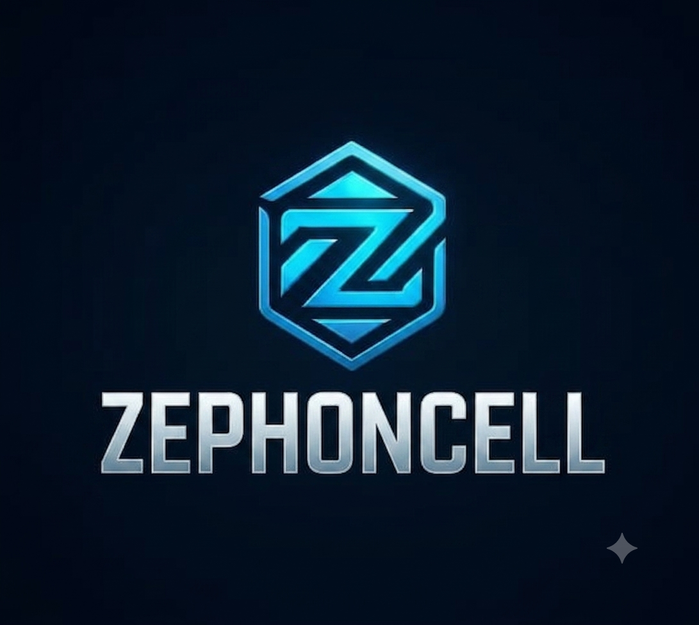
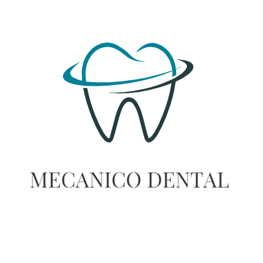

📱🔧Reparación de Celulares
Cambio de módulos, baterías, placas de carga y demás reparaciones en general.
24 de Septiembre 1721 (Concepción) Todos los días · 24 hs
En Nidox creamos una tarjeta interactiva para tu negocio, la publicamos dentro de nuestra plataforma y te ayudamos a conseguir mayor visibilidad para que los clientes te contacten directo a tu WhatsApp.
Nidox es una plataforma creada para ayudar a emprendedores y comercios a tener presencia digital sin complicaciones. Nos encargamos de crear una tarjeta interactiva para tu negocio, publicarla dentro de Nidox y mantener toda la información actualizada.
Creamos una tarjeta interactiva para que tus clientes puedan conocer tu negocio.
Promocionamos tu negocio para que más personas puedan descubrirlo.
Tus clientes podrán comunicarse rápidamente con vos mediante WhatsApp.
Nosotros realizamos las modificaciones y mantenemos tu tarjeta siempre actualizada.
Comenzar en Nidox es rápido y sencillo.
Te contactás con nosotros por WhatsApp o redes sociales.
Nos enviás el nombre del negocio, logo, fotos, horarios, ubicación y datos de contacto.
Diseñamos una tarjeta interactiva moderna dentro de Nidox adaptada a tu negocio.
Tu negocio queda disponible para miles de personas y nosotros seguimos administrándolo.
Nos ocupamos de que tu negocio tenga una presencia digital profesional para que vos solo te concentres en vender.
Tu negocio tendrá un espacio profesional disponible las 24 horas.
Más personas podrán conocer tus productos y servicios.
Los clientes podrán contactarte rápidamente con un solo clic.
Tu tarjeta tendrá una imagen profesional y adaptada a celulares.
Nos encargamos de realizar los cambios cuando los necesites.
Promocionamos tu negocio para aumentar su alcance.
Algunos de los comercios que ya forman parte de Nidox.

Cambio de módulos, baterías, placas de carga y demás reparaciones en general.
24 de Septiembre 1721 (Concepción) Todos los días · 24 hs
Prótesis completas, removibles y flexibles.Agregado y reparación de dientes, arañitas, rebasados y limpieza de prótesis.
La Pampa 530 (Concepción) Por consultasNosotros diseñamos tu tarjeta, la publicamos dentro de la plataforma y realizamos el mantenimiento para que siempre esté actualizada.